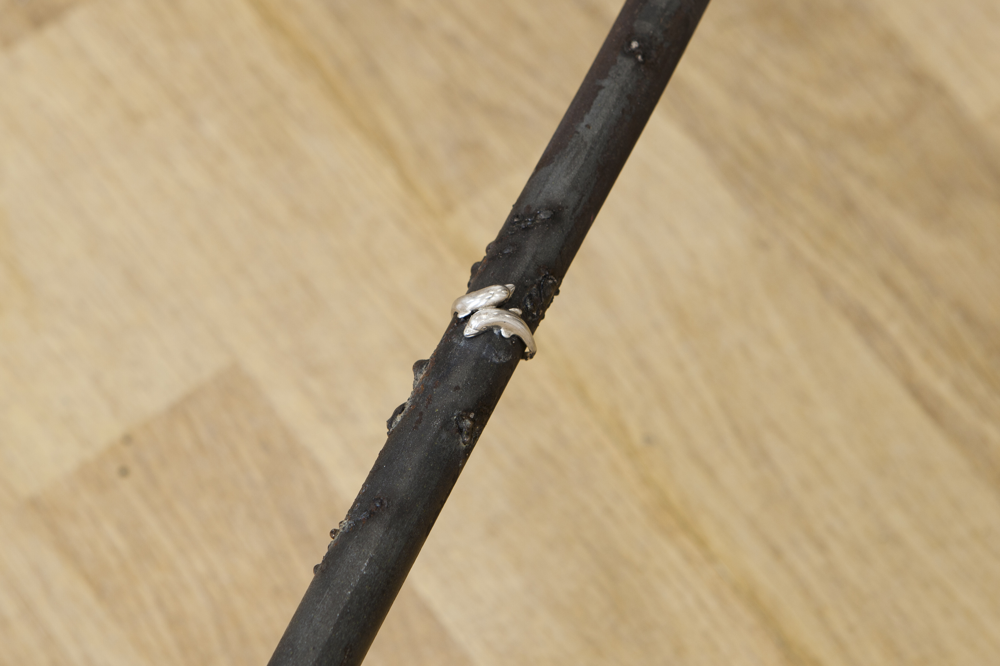

WHEN THE SUN GOES UP: BAR STORIES IN 3 ACTS
Vasilis Papageorgiou
Texts by: James Bridle, Danai Giannoglou, Paky Vlassopoulou
Papageorgiou has synthesised his open enquiry from places of gathering and community into a sculptural deconstruction of the bar, one of the epicentres of the modern social space. Presenting homogenous elements of the bar, he recalls popular counterculture through exploring past times, prompting a sentiment to Athenian nightlife culture.
This body of work weaves together the traits and affects of social groups that seem suspended between reality and fiction. Papageorgiou articulates the ecology of the bar at an anthropological level; the traces left behind by its characters, and factual or fictitious elements of the myths that surround these people. Although its identity is only traced and mimicked through the tangible, works are articulated through the narratives of characters that are as elusive as ghosts.
Commissioned Texts
~~~~~~~~~~~~~~~~~~~~~~~~~~~~~~~~~~~~~~~~~~~~~~~~~~~~

Installation view

Vasilis Papageorgiou, Solo Bar (Blue), Steel, ceramic, white marble, pink marble, bronze, leather foam and wood, 74 x 78.5 x 131 cm, 2018

Vasilis Papageorgiou, Footrest 1, Steel and found jewellery, 280 x 160 x 17 cm, 2018

Installation view

Vasilis Papageorgiou, Solo Bar (Red), Steel, ceramic, white marble, pink marble, bronze, leather foam and wood, 74 x 78.5 x 131 cm, 2018

Installation view

Installation view

Vasilis Papageorgiou, Solo Bar (Yellow), Steel, ceramic, white marble, wood, leather and foam, 74 x 54 x 121.5 cm, 2018
Vasilis Papageorgiou, Pillow (Blue 1), Leather, foam and wood, 50 x 215 x 215 cm, 2018

Installation view

Paky Vlassopoulou, Untitled, Commissioned text, 2018
Vasilis Papageorgiou, Bottle 1,2,3, Glazed ceramic, size varies, 2018
Vasilis Papageorgiou, Billiard Light, Found object, 46 x 46 x 23 cm, 2018

Vasilis Papageorgiou, Billiard Light, Found object, 46 x 46 x 23 cm, 2018

Installation view

Vasilis Papageorgiou, Footrest 3, Steel and found jewellery, 192 x 103 x 17 cm, 2018

Vasilis Papageorgiou, Pillow (Yellow), Leather, foam, wood and found watch, 56 x 19 x 9 cm, 2018
James Bridle, ON THE ROCKS, Commissioned text, 2018

Vasilis Papageorgiou, Pillow (Yellow), Leather, foam, wood and found watch, 56 x 19 x 9 cm, 2018

Vasilis Papageorgiou, Pillow (Blue 2), Leather, foam and wood, 65 x 30 x 8 cm, 2018

Vasilis Papageorgiou, Unititled, 1/5, Neon, 25 x 39 x 3 cm, 2018

Vasilis Papageorgiou, Bottle 4,5,6, Ceramic, Size variable, 2018

Installation view

Vasilis Papageorgiou, Triple Stool, Steel and saddles, 175 x 120 x 145 cm, 2018

Vasilis Papageorgiou,
Triple Stool, Steel and saddles, 175 x 120 x 145 cm, 2018